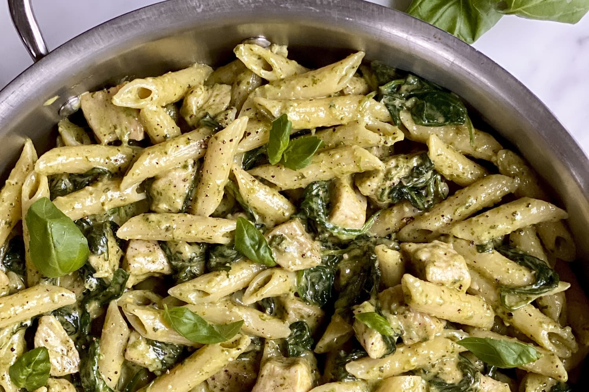

Description
Ingredients
- 1 package pasta
- 1/2 cup chopped onion
- 2 tablespoons olive oil
- 2 1/2 tablespoons pesto
- Salt and Pepper
- 2 tablespoons grated Parmesan cheese
Steps
- Boil the pasta in salted water and drain
- Cook the onion in oil, then stir in the pesto and seasonings.
- Add the pesto mixture to the hot pasta and toss with cheese.